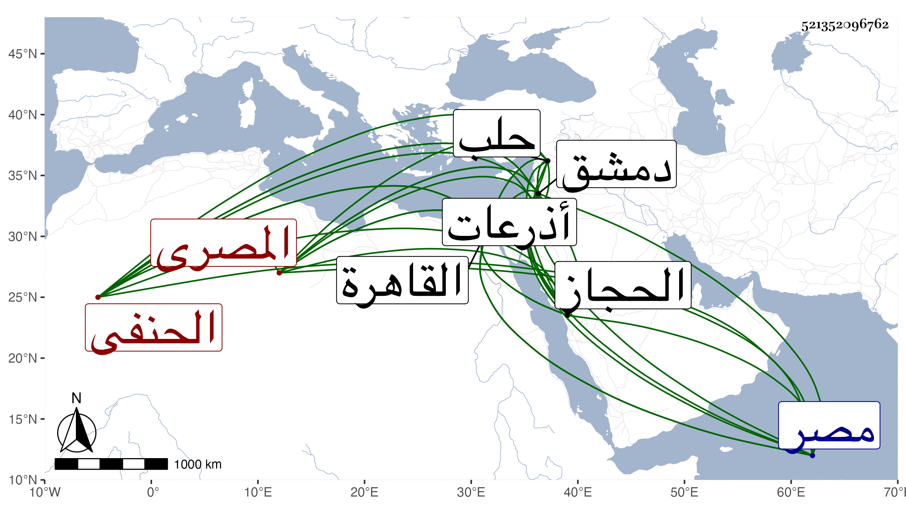

0902Sakhawi.DawLamic.ITO20230111-ara1.EIS1600.521352096762
Biography ID: 521352096762
757
مريم ابنة أحمد بن القاضي شمس الدين محمد بن ابرهيم بن ابرهيم ابن داود بن حازم أم عيسى الاذرعى ثم المصرى الحنفى أخت محمد الماضي . ولدت سنة تسع عشرة وسبعمائة بالقاهرة وكان أصلها من أذرعات فسكن جدها حلب ثم دمشق وولى القضاء بها ثم القاهرة ومات بها سنة اثنتي عشرة وتصدر ابوها بجامع الحاكم وناب في الحكم ومات سنة إحدى وأربعين وسبعمائة ؛ وكلاهما في الدرر ، وعاشت صاحبة الترجمة إلى ان انفردت برواية حديث السلفى بالسماع المتصل فهي آخر من حدث عن الواني والد بوسي بالسماع ومن مسموعها على أولهما صحيح مسلم وعلى ثانيهما في الخلعيات وقد سمع من الدبوسي أبوالعلاء الفرضى وبين وفاتيهما اعنى مريم وأبا العلاء مائة وبضع سنين ، أكثر عنها شيخنا وذكرها في معجمه وكذا في انبائه وقال سمعت الكثير من الواني والدبوسي والقطب الحلبي وناصر الدين بن سمعون وغيرهم ، وأجاز لها التقي بن الصائغ وغيره من مسندى مصر والحجاز وغيره من الائمة بدمشق ، خرجت لها معجما في مجلد وقرأت عليها الكثير من مسموعاتها وأشياء كثيرة بالاجازة وعاشت أربعا وثمانين عاما ، ونعم الشيخة كانت ديانة وصيانة ومحبة في العلم وهي آخر من حدث عن أكثر مشايخها المذكورين ماتت سنة خمس ؛ وتبعه المقريزى في عقوده في ذكرها رحمها الله .
